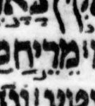

{kind=link}

| מֵרֵ֣יַּח מֵרֵ֣יחַ |
14:9 | yod has דגש and pulls back פתח in μL, says BHL but not BHQ |
The possible דגש looks slightly different than the four nearby dots in the two צירה vowels. This raises the possibility that it is not ink, e.g. a speck on the vellum.
Note that almost by necessity, if we transcribe the yod as having a דגש, then the פתח must be “pulled back” from being a furtive פתח to being a normal פתח that belongs to the yod. This is because, unlike most additions of דגש, here adding a דגש transforms the letter from being silent (an אם קריאה) to being (implicitly) doubled (geminated)! If we give the yod a דגש but do not pull back the פתח to the yod, we are proposing a pointing that goes beyond surprising to nonsensical. To do so would be unreasonably uncharitable.
Although the position of the פתח (between yod and ח) may seem to support the idea that the פתח belongs to the yod, this is actually a common position for a furtive פתח. See, for example, the image we provide of אלוה in 4:9 and 11:6. So, the position of the פתח is actually more consistent with the פתח belonging to the ח. (Or, if you prefer to think of furtive פתח in a different way, it belongs to the ר (being the second of two vowels belonging to the ר.)
BHQ silently ignores the possible דגש. Since BHQ does not note any uncertainty in its transcription here (or anywhere), it is hard to distinguish whether BHQ has ignored the mark in question on purpose or by accident.
U — M — μL (page 401A, col 1, line -9 (9 counting from bottom of column)):
μA (Aleppo) (page 273v, col 2, line 11, word 4):

μY (Cambridge 1753) (page 76B, col 1, line 24, word 2):
